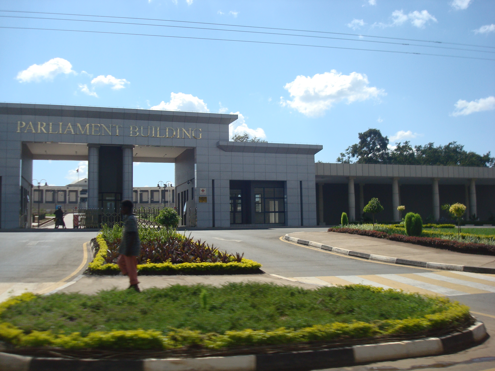

Parliamentary Affairs
National Youth Civic Forum: Malawian Student Delegates Debate Development Policy in Lilongwe
Over 200 elected youth delegates from every district in Malawi assembled near Capital Hill to propose legislative reforms on tertiary education funding, youth employment quotas, and climate adaptation financing.